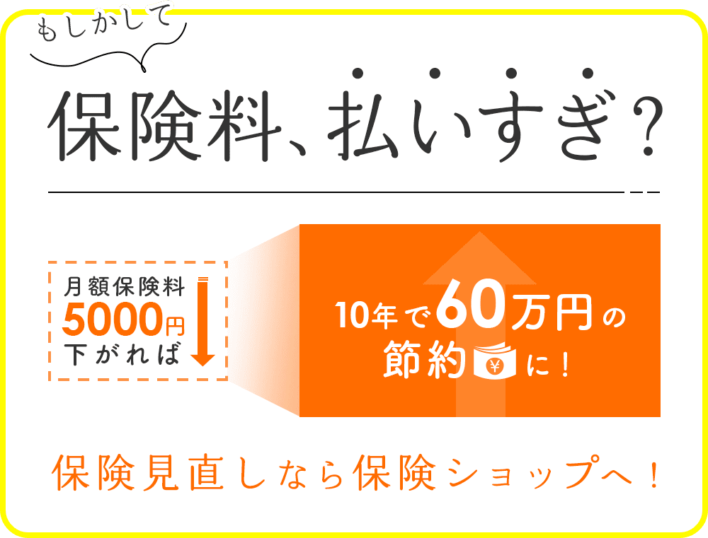

-
多くの保険ショップでは、複数の保険会社の商品を取り扱っています。そのため、似た条件の保険商品の中から安価な商品を探すことも可能です。
自分一人で保険を選ぼうとすると、情報収集や比較が大変ですが、保険ショップならそうした手間が省けます。 -
保険は、加入してから長期間にわたって保険料を払い続けるのが一般的です。一度加入して終わりではなく、定期的な見直しでより条件の良い保険に加入し直すことも必要になります。
保険ショップでの相談は、いつでも何度でも無料でプロの意見を聞きながら保険を選ぶことができます。 -
保険ショップでは保険相談だけでなく、保険の申し込み手続きや加入後のアフターフォローもおこなっています。
名義変更・住所変更などは自分で行うと手間ですが、保険ショップで加入した保険は保険ショップで代行してくれるので大変便利です。
保険ショップに相談した結果、万一の時、持ち家の人は家を家族に残せるので死亡保険があまり必要ないことがわかりました。
また自分たちの住んでいる市は、子供たちの医療費が中学卒業まで無料だということがわかり、子供達の医療保険も安いものに入り直しました。
節約できた保険料が思ったより大きかったので、少しだけ老後のための積立保険に入りましたが、それでも、毎月18,000円も節約できました。
※調査を元に作成された情報であり、生活環境や健康状態により個人差がございますのであらかじめご了承下さい。
※調査を元に作成された情報であり、生活環境や健康状態により
個人差がございますのであらかじめご了承下さい。
保険ショップに相談した結果、夫の保険はアカウント型保険というもので、積立の部分をあまり設定していなかったことがわかり、ほとんど貯蓄ができないことがわかりました。
今までの保険を止めて新たに入り直すことによって、夫の保険料は月々22,000円まで抑えられ、子供のために12,000円の積立保険に入ることが出来ました。
※調査を元に作成された情報であり、生活環境や健康状態により個人差がございますのであらかじめご了承下さい。
※調査を元に作成された情報であり、生活環境や健康状態により
個人差がございますのであらかじめご了承下さい。
保険相談ニアエルが、全国の掲載保険ショップからお客様のご希望条件に合う1店舗をご案内いたします。
お申し込みから保険相談まで無料でご利用いただけます。
全国の掲載保険ショップから
ご希望条件に合う1店舗をご案内いたします。
お申し込みから保険相談まで無料です。
-
お申込フォームからご希望の条件とお客様情報を入力し、お申し込みください。ご案内可能な店舗が確定しましたら、メールにてご案内の通知をお送りいたします。届いたご案内通知メールのご予約確認用リンクを選択してください。こちらで予約受付完了となります。
フォームからご希望の条件とお客様情報を入力し、お申し込みください。メールにてご案内の通知をお送りいたします。
-
ご予約日当日にご案内した保険ショップへお越しください。プランナーが、お客様の現在の状況や将来のライフプランについてヒヤリングをおこない、必要なお金のシミュレーションから必要な保険の種類、保障金額、保障期間について提案をおこないます。
プランナーが、お客様についてヒヤリングをおこない、必要なお金のシミュレーションから必要な保険の種類、保障金額、保障期間について提案いたします。
-
プランナーの提案内容を検討し、納得ができたら保険の申し込み手続きをおこないます。保険の申し込み手続きは任意です。保険ショップでは、申し込み手続きだけでなく、登録情報の変更や解約・保険金の請求など、契約後のアフターフォローもおこなっています。
提案内容に納得ができたら任意で保険の申し込み手続きをおこないます。保険ショップでは、登録情報の変更や保険金の請求など、契約後のアフターフォローも可能です。
-
保険相談は何度でも無料です。
相談料や事務手数料など一切発生しません。自分のペースで検討できますのでお気軽にご予約ください。 -
保険商品についての内容説明や加入手続きだけではなく、ライフプランの相談が可能です。お客様のご希望に応じて、ライフプランのシミュレーションを行った上で、お子様の教育資金や老後の資金、万一の時の家族の生活費など、主に金銭面の不安を解決するための提案をしてくれます。保険商品を提案する場合にも、保険の基礎知識からわかりやすくご説明いたします。
-
保険相談をする際は、月々の保険料や家族構成など、気を付けるべきポイントが多く存在します。まずはどんな保障が必要かを考え、自分に最適な保険を選ぶようにしましょう。
詳細はこちら -
保険ショップでは、対面で保険を販売しているため、保険種類やプランが限定されておらず多様な商品を扱うことができます。そのため、持病がある方でも保険相談ができますのでご安心ください。ただし、健康状態に不安があるという人は、健康診断の結果や持病のことなどを、担当者に必ず伝えるようにしましょう。
-
職業によっては、保険に加入できないことがあります。加入制限がある職業は、一般的な職業に比べ事故に遭いやすい職業や、病気になりやすい職業です。制限される職業の規定は、保険会社によって異なるため、加入検討をする際に確認するようにしましょう。
-
保険相談をする上でのメリットやデメリットは様々あります。保険相談をするメリットは、プロから詳しいアドバイスをしてもらいプランを決められることです。デメリットとしては、来店型の保険相談の場合、店舗窓口に来店しなければならないことが挙げられます。